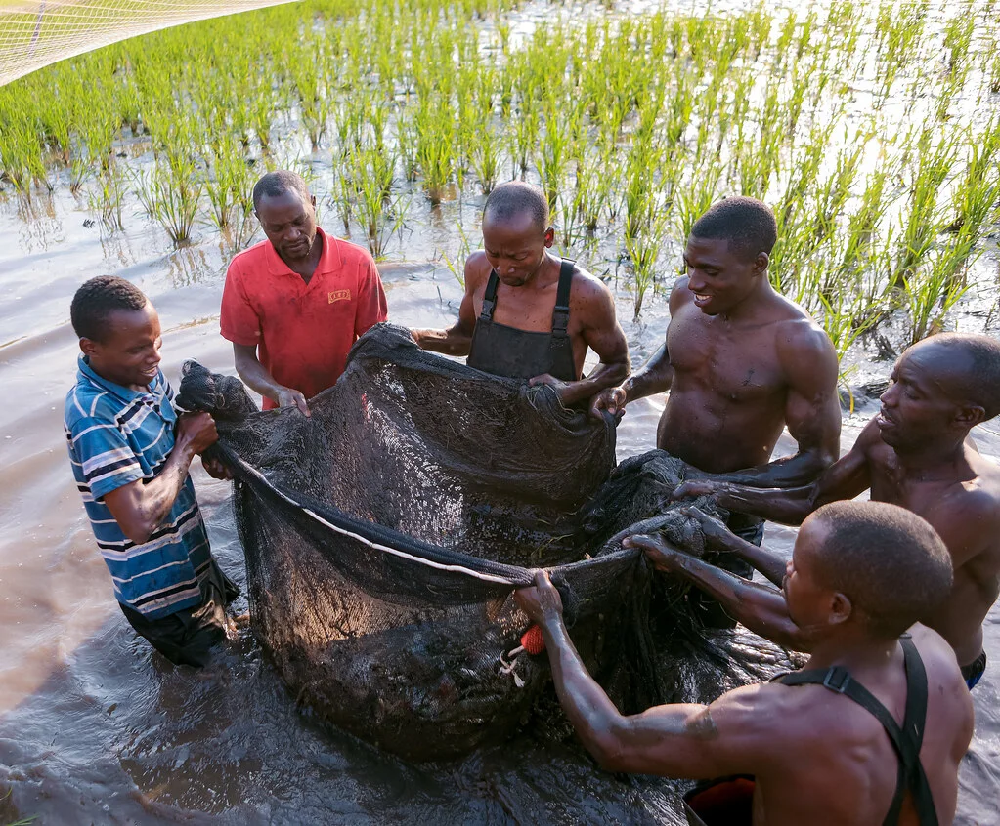
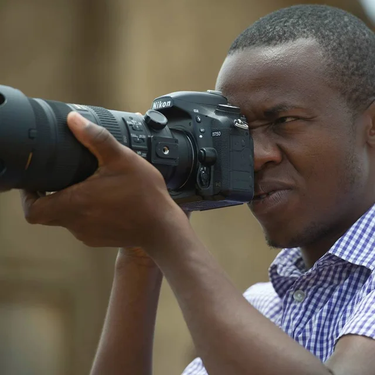

KIGALI, RWANDA / PHOTOGRAPHY · FILM · LIVE
Every story
has a pulse.
We bring it into focus.
For organisations with a purpose.
Brands with something to say.
Events that bring people together.
BEHIND THE CAMERA / JABO
A personal point of view.Meet the studio ↗
A STUDIO NOTE / 01Start with people.
Find the story.
01 / SELECTED FRAMES
Life happens.
Make it matter.
People, places, moments.
A few views from our archive.


From the studio’s supplied image archive. Project stories and credits are being curated.
02 / INSIDE THE FRAME
Look closer.
There’s a story here.
A moment. A decision. An image.
Explore the way a frame can change what you see.
01 / THE MOMENT
SOUND INTO IMAGE
First, pay attention.
The hands, the water, the shared effort. Before choosing a frame, notice what brings the scene together.
Explore at your own pace. No sound required.
03 / WHAT WE DO
One studio.
Different ways to connect.
From a single portrait to a room full of people, begin with what you want your audience to feel.
01Photography
People / Brands / Places
Images that give your people, work and ideas a recognisable face. A considered view of what makes your story yours.
Plan a photography brief ↗02Film
Stories / People / Purpose
Bring a story to life through a voice, a place and a point of view. Shape the idea around the audience it needs to reach.
Talk about a film ↗03Live production
Events / Shared moments
Give the moment the attention it deserves, from the room to the people watching beyond it. Tell us about the event, audience and coverage you need.
Discuss your event ↗
NKURUNZIZA JABO / FOUNDER & VIDEO JOURNALIST
04 / THE PEOPLE BEHIND THE PICTURE
A studio with
someone to
talk to.
Creative Sound Studio brings photography, filmmaking and live production together in Kigali. Founded by video journalist Nkurunziza Jabo, the studio starts with people and the stories they have to share.
You bring the purpose. We start a conversation about how to make it seen, heard and felt.
Tell us what matters to you ↗Listen closely.
Look a little longer.
05 / FROM FIRST CONVERSATION TO FINAL FRAME
Find the intention.
Your audience, your purpose, your moment. Start with the questions that shape the work.
Give it a form.
Agree the direction and scope, then bring the people, images and production together.
Make it ready.
Review the work together and prepare the agreed final formats for the places it needs to live.
A MOVING PICTURE OF THE STUDIO
Some stories
need to move.
Photography, film and live work share the same starting point: a moment worth paying attention to.
STUDIO FILM / POSTER PREVIEW
06 / YOUR NEXT STORY
What are you
imagining?
A clear idea, a rough thought, or an event on the horizon. Start where you are.
Preview this first conversation. Your details stay on this page; nothing is sent or booked.